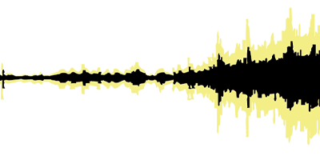

인천역 앞에 위치한 인천항 제8부두는 제1부두와 함께 철재와 목재
등을 하역하던 장소였다.
현재는 주차장으로 개방되어 있으나 편의시설 부족 등으로 잘 활용되지
않고 있다.
8부두 주차장 주변에는 대형 건물들을 짓고 있는 공사가 한창이라
화물차가 많이 다닌다.
1883년 인천항이 개항되고 이듬해 청나라 조계지가 설치되면서
중국인들이 현 선린동 일대에 이민, 정착하여 그들만의 생활문화를
형성한 곳이다.
화교들은 소매잡화 점포와 주택을 짓고 본격적으로 상권을 넓혀 중국
산둥성 지역에서 소금과 곡물을 수입, 1930년대 초반까지 전성기를
누렸다.
1호선 인천역 근처에 있는 일본풍거리는 과거 일본인들이 거주했던
일본 조계지이다.
근대에 지어진 일본식 목조주택이나 석조 건축물이 아직까지 보존되어
있거나, 외벽 모습만 일본풍으로 바꾼 건물들이 거리를 형성하고
있다.
일본풍 목조건물들은 현재 카페나 박물관, 전시관 등으로 개조되어
사용되고 있다.
일본식 연립주택인 나가야가옥을 연상하게 만드는 감성카페들도 많다.
1883년 개항 이후 건립된 건축문화재 및 1930~40년대에 지어진
건축물이 잘 보존된 구역이다.
당시 근대건축기술 및 역사적 기록을 지니고 있어 건축 조형적 가치를
인정받고 있다.
이곳을 리모델링하여 지역 예술인과 젊은 작가들의 예술 활동을 돕기
위한 창작스튜디오, 공방, 자료관, 전시실, 공연장 등으로
조성했다.
도시의 역사성과 장소적 특성을 최대한 살려 문화적으로 재활용하자는
시민들의 뜻과 인천시의 의지가 합쳐져 탄생하였다.
'개항로 맥주'는 인천의 수제 맥주 양조장 ‘칼리가리 브루잉’이 2020년
‘인천맥주’란 이름으로 다시 브랜딩한 뒤 만든 첫 맥주다.
맥주 이름은 개항지인 인천 신포동의 역사를 담았다. 지역 스토리를
담았다는 취지에 맞춰 인천에서만 판매 중이다.
국내 최초의 비건 인증을 받은 맥주이기도 하다.
1990년대에 최고의 전성기를 맞았던 신포 패션문화의 거리는 IMF
이후에 생기를 잃었다.
그러나 2001년에 외벽을 빨간색 페인트로 칠하고, 각종 페스티벌을
진행하면서 활기를 되찾았다.
현재는 잘 볼 수 없는 맞춤 양복점, 우리나라 최초의 영화관인
‘애관극장‘ 등 오래된 가게와 현대의 가게가 공존한다.
신포국제시장은 19세기 말 인천항 인근 신포동에 있던 생선 가게와
채소 가게들이 시초가 된 인천 최초의 근대적 상설 시장이다.
방앗간, 수예점, 양화점, 잡화점, 과일가게 등 약 160여 개의 다양한
점포 외에도 외국인을 상대로 한 가게가 많아 이국적인 풍물을 느낄 수
있다.